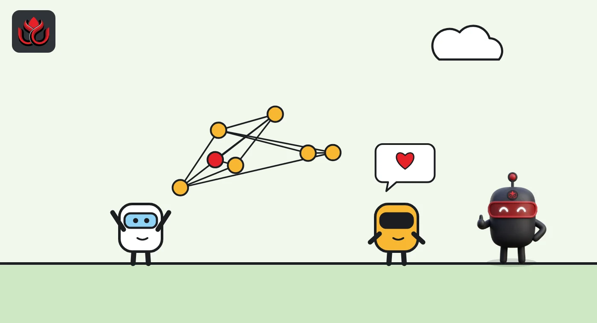
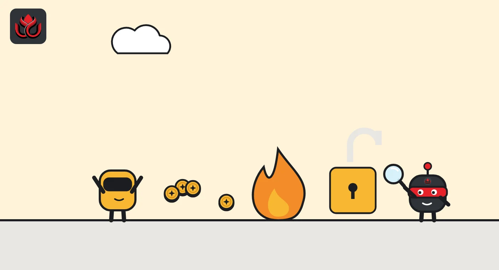

Ethos promised WHUF buyers 85% back. It has paid $1.6 million as the token halved
The reputation protocol on Base sold 20% of its token at $4.20 and guaranteed qualifying buyers $3.57. WHUF unlocked on October 8 and fell to about $1.93, so buyers are cashing in the floor while the Ethos Foundation burns the returned tokens.
Key points
- Ethos sold 20% of its 10 million WHUF supply at $4.20 per token in an auction with 1,566 bidders, offering an 85% price floor for buyers who used the tokens on the platform.
- WHUF listed on October 8, 2026, peaked at $4.17 the next day and traded near $1.93 on November 2, per CoinGecko.
- By October 28 the Ethos Foundation had paid out $1,605,758 under the guarantee and burned 447,000 WHUF.
A price floor under test
The Ethos Foundation has paid $1,605,758 to WHUF buyers who claimed an 85% price guarantee, after the token fell to less than half its sale price. Ethos Network, a reputation protocol on the Base blockchain, sold WHUF in September with that promise attached: buyers who put their tokens to work on the platform would be covered at 85% of what they paid, for 12 months.
WHUF became tradable on October 8, 2026. On October 21 the Ethos account on X said the Ethos Foundation had honored guarantee claims from 99 participants, returning $399,000 and burning 110,800 WHUF. A week later it reported a second batch for 46 participants, worth $407,800, with another 113,200 WHUF burned. In total, the foundation said it had burned 447,000 WHUF, which it said reduced circulating supply by about 21%.
The reason is the price. WHUF traded near $1.93 on November 2, according to CoinGecko, less than half of the $4.20 sale price.
What Ethos is
Ethos is an on-chain credibility system. Users write reviews of each other, vouch for people they trust by staking tokens on them, and can open a slash (a penalty that takes stake away) against bad actors. The result is a credibility score for each profile. Ethos says about 5,000 people use its Chrome extension each day.
The project says it started in 2023 and ran on ETH for about 18 months before launching its own token. It describes itself as 99% community-funded, with about 1% of WHUF owned by venture firms and more than 450 investors who came in through Echo, a group investing platform.
WHUF is meant to sit at the center of that system. According to the Ethos whitepaper, vouching, fees, markets and rewards all run through it, supply is fixed at 10 million, and all protocol fees are burned.

How the sale and the guarantee worked
The sale ran on Sonar as an auction with a single clearing price. Bidders committed USDC at the highest valuation they would accept, and every winner paid the same final price. The sale page shows 1,566 bidders and $8.7 million committed in total. The auction cleared at a $42 million fully diluted value, or $4.20 per token, which put about $8.4 million of demand into the 2 million tokens on offer.
The guarantee had strict conditions. Buyers had to vouch their WHUF within 30 days and keep it vouched. Unvouching for any reason ended the protection for good. Redemptions are paid in USDC by the Ethos Foundation and require identity checks. The rate would have risen to 90% if the auction had cleared at $7.50 or more, which it did not.
At $4.20, the floor works out to $3.57 per token. The two redemption batches fit that: $1,605,758 for about 447,000 burned WHUF is roughly $3.60 per token, by our own arithmetic.
Who holds WHUF
The token contract is controlled by a 3-of-5 Ethos Foundation multisig, according to the Ethos whitepaper. All 10 million WHUF were minted in one transaction at the token generation event on September 8, 2026, and no further minting is possible. Tokens were locked for everyone until listing on October 8. On September 28 the foundation unlocked the treasury allocation so it could supply market makers, while all other tokens stayed locked.
The team holds the largest share at 28.9%. The sale took 20%, contributor rewards 18% and early pre-seed and seed supporters 11.1%. The treasury has 10%, ecosystem and bounties 5% each, and two bonus pools for referrals and Contributor XP 1% each.
CoinGecko recorded a high of $4.17 on October 9, the day after listing, and a low of $1.76 on October 30. On November 2 it showed total supply at about 9.49 million WHUF, reflecting burns, and a circulating supply of about 1.78 million.
WHUF allocation
% of 10 million WHUF
Source: Ethos WHUF sale page

Timeline
Ethos announces the WHUF auction for 20% of supply
Auction on Sonar clears at $4.20
All 10 million WHUF minted and locked
Foundation unlocks treasury tokens for market makers
WHUF lists and sale tokens become transferable
WHUF peaks at $4.17
First guarantee batch: 99 buyers, $399,000
Second batch: 46 buyers, $407,800; $1.6 million redeemed in total
WHUF hits a low of $1.76
Risks for holders
- Guarantee conditions. The floor only covers buyers who vouched in time, kept tokens vouched and passed identity checks.
- Foundation funding. Every claim is paid from foundation money. Ethos has not said in the sources we checked how much it has set aside.
- Thin float. With about 1.78 million WHUF circulating on CoinGecko's count, small trades can move the price a lot.
- Large team share. The team holds 28.9% of supply, and its release schedule will matter for the price.
LC Insight analysis
This section is our reading of the facts above, not a statement of fact.
- We think the guarantee is working like a put option. Buyers who followed the rules get about $3.57 while the market pays under $2, and the foundation takes the loss.
- Burns cut supply but do not create demand. Once eligible buyers have claimed, WHUF's price will depend on whether vouching and reputation markets grow, not on buybacks.
- Other token sales should study this. A floor tied to real product use is rare, and Ethos is showing in public exactly what it costs when the price collapses.
What's next
- Further redemption batches and the total paid by the Ethos Foundation
- Whether WHUF trades back above the $3.57 floor
- Growth in vouched WHUF and reputation market activity
- Disclosure of the team token release schedule
Disclaimer. This article is based on public information and the sources listed below as of the update time shown. It is for information only and is not investment, legal or tax advice. Figures may change as companies and authorities publish new data.